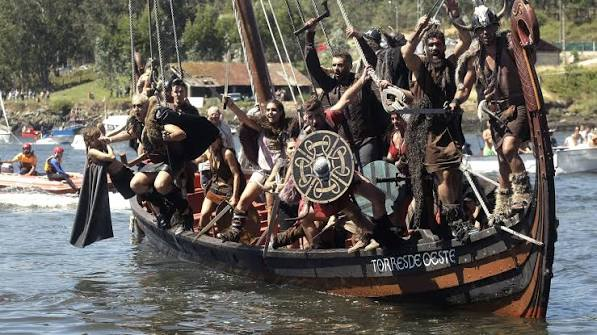
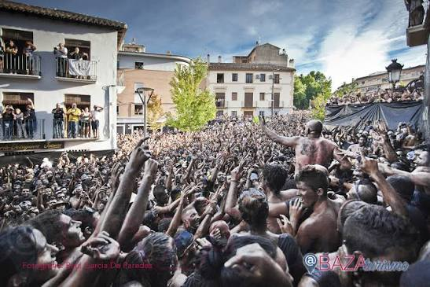

Arribada de la Carabela Pinta a Baiona
Baiona (Pontevedra) · Recreación histórica · «El primer pueblo de Europa en saber que existía América.»
- La fecha que se conmemora ocurrió en este puerto exacto, y la bocana por la que entra la carabela es la misma de 1493. Esa coincidencia de lugar es lo que distingue el fin de semana de un mercado de época al uso.
- El acto del Paseo Pinzón del domingo a mediodía tiene tono institucional, con autoridades, banda y ofrenda de coronas. Leerlo como la conmemoración oficial que es ayuda a entender el cambio de registro respecto al resto del programa.
- En la representación desembarcan también las figuras de los nativos americanos que viajaban a bordo. Aquel fue el primer encuentro entre dos mundos y el comienzo de todo lo que vino después para esos pueblos, y la escena carga con las dos cosas.
La esencia de la fiesta
Desde la cubierta, el piloto reconoce la silueta de un monte que conoce de toda la vida. Lleva semanas de Atlántico encima, el aparejo roto por la tormenta de las Azores, y acaba de meter la carabela en la bahía más segura que conoce: la de su propio pueblo. Es el 1 de marzo de 1493 y los vecinos que bajan al muelle van a ser los primeros europeos en saber que existe otro continente.
¿En qué consiste?
La Festa da Arribada conmemora cada primer fin de semana de marzo la llegada de la Carabela Pinta al puerto el 1 de marzo de 1493, el día en que Baiona se convirtió en el primer pueblo de Europa en saber que existía América.
Durante tres días el casco histórico se vuelca en el siglo XV. El Real Mercado Medieval ocupa el Paseo Pinzón y la Alameda con más de 150 puestos de artesanos, orfebres y herreros, y alrededor se reparten los desfiles de época, los juglares, la esgrima medieval y las justas a caballo. El acto central es la recreación teatral en la que Pinzón relata la gesta al corregidor: un barco de época se acerca a la orilla y desembarcan los tripulantes y los nativos americanos.
Historia
El 1 de marzo de 1493, la Carabela Pinta entró en el puerto de Baiona capitaneada por Martín Alonso Pinzón. La expedición de Colón regresaba del Nuevo Mundo y una tormenta a la altura de las islas Azores había separado a La Pinta de La Niña. A bordo viajaba como piloto Cristóbal García Sarmiento, natural de Baiona y gran conocedor de la costa atlántica gallega, quien fijó el rumbo hacia la bahía segura de su villa natal para reparar el aparejo. Los vecinos y su corregidor fueron los primeros europeos en ver a los nativos americanos que viajaban a bordo y en tocar los productos del Nuevo Mundo: maíz, yuca, batata, canela.
Pinzón llegó gravemente enfermo, posiblemente de fiebres contraídas durante el viaje. Partió hacia Palos de la Frontera, donde falleció apenas quince días después, sin llegar a entrevistarse con los Reyes Católicos. Nunca supo el alcance real de lo que había completado. De este puerto, en cambio, salieron las primeras relaciones escritas que informaron a la corte del éxito de la flota.
La fiesta moderna arranca en 1996, con el aniversario del Descubrimiento todavía reciente, y se ha celebrado sin interrupción salvo en 2021, el año de la pandemia. El hermanamiento con Palos de la Frontera, el puerto desde donde zarpó la expedición, se canaliza a través de la Real Sociedad Palósfila Pinzoniana, que mantiene vivo el vínculo entre las dos villas.
Marco normativo
- La Consellería de Cultura de la Xunta de Galicia la declaró Festa de Interese Turístico de Galicia mediante resolución publicada en el DOG n.º 131, de 9 de julio de 1999.
- La Secretaría General de Turismo y Comercio Interior le concedió el título de Fiesta de Interés Turístico Nacional por Resolución de 23 de septiembre de 2010, publicada en el BOE n.º 241, de 5 de octubre de 2010.
- La Secretaría de Estado de Turismo le concedió el de Fiesta de Interés Turístico Internacional por Resolución de 27 de octubre de 2015, publicada en el BOE n.º 269, de 10 de noviembre de 2015.
Fechas 2027
La fiesta se celebra del viernes 5 de marzo al domingo 7 de marzo de 2027, con actos previos desde el miércoles 25. Es la XXX edición del Real Mercado Medieval y el 533 aniversario de la Arribada. El domingo es la fecha central, porque el 7 de marzo es el día exacto que se conmemora.
Programa
- Desde el miércoles 25 · Actos previos Actividades culturales en la Casa de la Navegación y el casco histórico que abren la semana festiva. El Real Mercado Medieval comienza a instalarse en el Paseo Pinzón y la Alameda.
- Viernes 27 · Mañana · Apertura Los cañones de la fortaleza disparan la salva que abre oficialmente el mercado. A continuación arrancan los puestos, y juglares, malabaristas, músicos y artesanos de todos los gremios toman las calles del casco histórico. Al atardecer, espectáculos aéreos y de fuego en los jardines de la Casa de la Navegación.
- Viernes 27 · Mediodía · Iglesia de Santa María Misa solemne con ofrenda ante la Cruz de Evangelización de América, el acto religioso que recuerda lo que vino detrás del Descubrimiento.
- Sábado 28 · Mañana y tarde Mercado a pleno rendimiento. En la playa de A Ribeira, demostraciones de tiro con arco, esgrima medieval y las justas a caballo, que llenan la arena de polvo y público. Pasacalles de compañías teatrales por la Alameda Carabela Pinta.
- domingo 7 de marzo · Mediodía · Paseo Pinzón Acto conmemorativo de la Arribada: recepción de autoridades con la Banda de Música de Baiona, ofrenda de coronas e himnos. El momento más solemne del programa.
- domingo 7 de marzo · Al atardecer · Playa de A Ribeira La representación teatral «Arribada do Descubrimento», con dramaturgia de Avelino Sierra y dirección de Mónica Sueiro. Cierra la jornada un espectáculo pirotécnico sobre la bahía.
La carabela y el puerto
La bahía está protegida por el Castillo de Monterreal, tres kilómetros de murallas almenadas sobre la península de Monte Boi que hoy albergan el Parador Nacional, y por las Islas Cíes al norte, que cortan los vientos del Atlántico. En 1493 era uno de los fondeaderos más seguros de la costa gallega, y eso explica la decisión de Cristóbal García Sarmiento cuando la tormenta de las Azores destrozó el aparejo: conocía esta bahía mejor que nadie.
Amarrada bajo las murallas está la réplica de la Carabela Pinta, construida para el V Centenario. Es hoy un museo flotante y reproduce el interior del barco, con los camarotes y la carga tal como iban durante la travesía.
Música y sonido
Lo que marca el ritmo de la fiesta no sale de ningún escenario: sale de los cañones de la fortaleza. Cada jornada del mercado abre con una salva desde las murallas y el estruendo rebota en la bahía antes de entrar en el casco histórico.
Dentro del mercado la música va a pie. Juglares, malabaristas y grupos de música medieval recorren las calles en pasacalles, así que el repertorio depende de en qué esquina te pille. El domingo cambia el tono: en el acto del Paseo Pinzón toca la Banda de Música de Baiona, y es el único rato del fin de semana en que el público escucha quieto.
- Para la salva de apertura, colócate mirando hacia la fortaleza. Desde el interior del mercado se oye perfectamente, pero no se ve de dónde sale.
- Si te interesa la banda, el acto del domingo a mediodía es el único con música de programa. El resto del fin de semana la música te encuentra a ti.
No te lo puedes perder
La entrada de la carabela por la bocana
domingo 7 de marzo · Al atardecer · Puerto de BaionaLa silueta de la carabela aparece por la bocana con la fortaleza encendiéndose al fondo. El puerto entero gira hacia el mar a la vez.
¿Por qué no perdértelo?
Porque el escenario no es un decorado: las murallas llevan ahí desde antes de 1493 y la bocana por la que entra el barco es la misma por la que entró la Pinta. Durante unos minutos, el hecho y la recreación ocupan el mismo sitio.
La representación teatral en A Ribeira
domingo 7 de marzo · Al atardecer · Playa de A RibeiraEl barco se acerca a la orilla, bajan los tripulantes agotados y los nativos americanos, y Pinzón cuenta al corregidor de dónde vienen. Todo ello sobre la arena, con el público a pocos metros.
¿Por qué no perdértelo?
Porque el texto y la puesta en escena se renuevan cada año, pero lo que se representa no cambia: la primera conversación entre un europeo que se había quedado en casa y alguien que acababa de volver del otro lado del Atlántico.
Las justas a caballo en A Ribeira
Sábado 28 · Tarde · Playa de A RibeiraCaballeros armados chocan con lanzas sobre la arena, con el Atlántico detrás. El polvo, el estruendo del impacto y el público pegado a la orilla hacen de esto la parte más física del programa.
¿Por qué no perdértelo?
Porque el marco cambia el espectáculo: una justa sobre arena mojada, con la fortaleza a un lado y mar abierto al otro, se parece poco a la misma justa montada en una plaza.
La réplica de la Carabela Pinta
Todo el año · Puerto de BaionaTrece hombres. Veinte metros de eslora. El Atlántico de ida y de vuelta. El museo flotante permite bajar al interior y ver en qué espacio se hizo aquel viaje.
¿Por qué no perdértelo?
Porque el tamaño del barco es el dato que no se entiende leyéndolo. Verlo por dentro antes de la representación del domingo cambia la escala de todo lo que viene después.
Consejos prácticos
- La villa colapsa durante la fiesta. El Concello pone autobuses gratuitos cada media hora desde Porto do Molle, y aparcar allí y subir en lanzadera es la manera de no quedarse atascado en los accesos.
- Si solo puedes ir un día, elige el domingo: concentra el acto conmemorativo y la representación. El sábado tiene las justas y el mercado a tope.
- Visita la carabela al llegar, antes de meterte en el mercado. La réplica abre de martes a domingo durante todo el año y en fin de semana festivo el horario puede ampliarse, así que confirma en el Concello.
- Las murallas del castillo dan la mejor perspectiva de la entrada del barco por la bocana. Sube con tiempo.
- El mercado, las representaciones en la playa y los espectáculos de calle son de acceso libre. La réplica y la Casa de la Navegación tienen entrada de pago.
- Baiona está a unos 35 minutos de Vigo por la AG-57 o por la carretera de costa PO-325, y a unos 50 de Pontevedra por la AP-9. También se puede llegar en barco desde Vigo.
- El alojamiento en la villa es escaso para el volumen de visitantes, así que conviene reservar con meses de antelación. Vigo tiene mucha más capacidad.
Vocabulario de la Arribada
- Arribada
- En términos náuticos, la entrada forzosa de un barco en un puerto por mal tiempo o avería. Es exactamente lo que hizo Pinzón: refugiarse para reparar un aparejo destrozado por las tormentas del Atlántico. La palabra da nombre a la fiesta y al hecho que conmemora.
- Corregidor
- El representante de la autoridad real en la villa en 1493, y por tanto el primer europeo en recibir oficialmente la noticia de boca de Pinzón. El cargo tenía atribuciones de gobierno y de justicia en nombre de la Corona.
- Real Mercado Medieval
- El nombre oficial del mercado de artesanos de la fiesta. El adjetivo «Real» alude al título de Real Villa que la Corona concedió a Baiona por su papel en la historia del Descubrimiento.
- Monte Boi
- La península que cierra la bahía por el sur y sobre la que se asienta el Castillo de Monterreal. El nombre gallego significa «monte del buey» y lleva siglos designando este promontorio que vigila la bocana.
Galería


Enlaces útiles
- Concello de Baiona: programa oficial y autobuses lanzadera
- Turismo Rías Baixas: información sobre la Arribada
- Turismo de Galicia: información regional
Última verificación de datos: 2026-10-17. Declaraciones oficiales cotejadas en el BOE.
Preguntas frecuentes
- ¿Cuándo se celebra la Festa da Arribada de Baiona en 2027?
- Del viernes 5 de marzo al domingo 7 de marzo de 2027, con actos previos desde el miércoles 25. Es la XXX edición del Real Mercado Medieval.
- ¿Por qué Baiona fue el primer pueblo de Europa en saber que existía América?
- Porque el 1 de marzo de 1493 la Carabela Pinta entró en el puerto de Baiona tras ser separada de La Niña por una tormenta. El piloto baionés Cristóbal García Sarmiento fijó el rumbo hacia la bahía de su villa natal. Los vecinos y el corregidor fueron los primeros europeos en ver nativos americanos y productos del Nuevo Mundo.
- ¿Qué es el Real Mercado Medieval?
- El mercado de época que ocupa el Paseo Pinzón y la Alameda durante los tres días, con más de 150 puestos de artesanos, orfebres y herreros. El acceso es gratuito.
- ¿Qué le pasó a Martín Alonso Pinzón tras la Arribada?
- Llegó a Baiona gravemente enfermo. Partió hacia Palos de la Frontera, donde murió quince días después sin entrevistarse con los Reyes Católicos.
- ¿Se puede visitar la réplica de la Carabela Pinta?
- Sí. Es un museo flotante amarrado bajo las murallas del castillo y abre de martes a domingo durante todo el año, con entrada de pago. El Concello publica los horarios y cualquier cambio puntual.
Otras fiestas que te van a interesar


